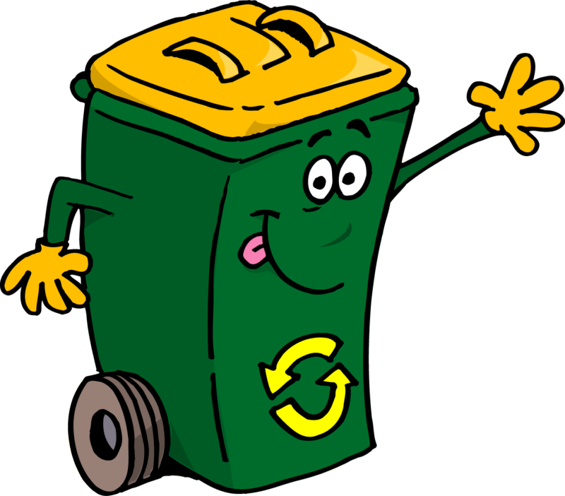

Hello, Let's know more about

Domestic waste management refers to the handling, collection, transportation, processing, recycling, and disposal of waste generated by households. Effective domestic waste management is crucial for maintaining public health, environmental sustainability, and overall quality of life in communities.
Encouraging households to segregate waste into categories like recyclables, organic waste, and non-recyclables can facilitate more efficient management downstream.
Regular and organized collection of waste from households is essential. This can be done through municipal services, private companies, or community initiatives.
Once collected, waste needs to be transported to processing facilities or disposal sites. Efficient transportation methods can minimize environmental impact and costs.